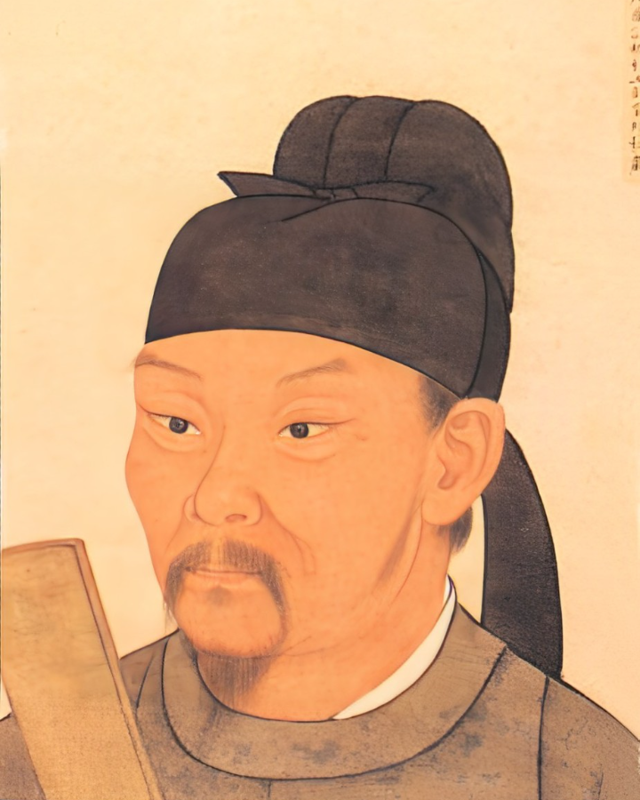

李白，唐朝浪漫主义诗人，字太白，号青莲居士。祖籍陇西成纪，生于蜀郡绵州，为凉武昭王李暠九世孙。其诗作奔放，想象丰富，被誉为“诗仙”，与杜甫并称“李杜”。

杜甫，唐朝现实主义诗人，字子美，自号少陵野老。祖籍襄阳，迁居巩县。诗作深沉，反映社会现实，与李白合称“大李杜”，世称“老杜”。

岑参，唐代诗人，与高适并称“高岑”。进士及第后，曾两次从军边塞，对边塞风光和军旅生活有深切感受，边塞诗尤为出色，曾任嘉州刺史，世称“岑嘉州”。
李益，唐代诗人，字君虞，祖籍凉州姑臧，后迁河南郑州。进士及第后，仕途失意，弃官漫游燕赵。以边塞诗作名世，擅长绝句，尤其七绝。